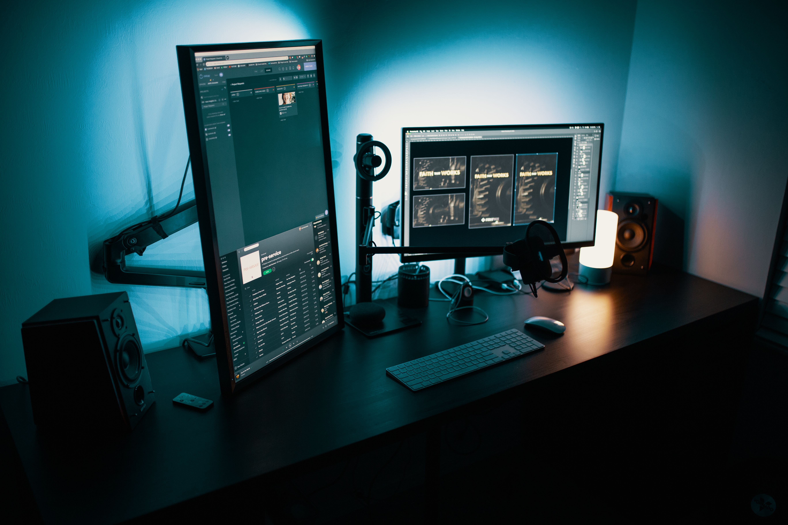

OS-000 · Diagnóstico gratuito
Conserto que devolve
sua máquina ao trabalho.
Computador travando, notebook lento ou tela azul? Diagnóstico honesto e reparo rápido, direto na oficina do bairro — sem enrolação e sem susto no orçamento.
- Experiência
- 15 anos
- Aparelhos reparados
- +2.400
- Orçamento
- Sem compromisso

Bancada de testes da oficina
Quem cuida do seu equipamento
Isac Luz atende computadores e notebooks há 15 anos, entre oficina própria e atendimento a domicílio. Começou trocando peças e formatando máquinas de vizinhos e hoje monta, recupera e mantém equipamentos de uso pessoal e profissional na região.
O trabalho segue uma regra simples: explicar o defeito em linguagem clara, mostrar a peça trocada e só cobrar pelo que o aparelho realmente precisa.
- Nome
- Isac Luz
- Função
- Técnico em Informática
- Experiência
- 15 anos
- Especialidades
- Hardware, montagem, redes domésticas, recuperação de dados
- Atendimento
- Oficina e a domicílio
Serviços
Cada trabalho sai da oficina com ordem de serviço registrada, para você acompanhar o que foi feito.
-
OS-01
Troca de peças
HD, SSD, memória RAM, fonte, tela e outros componentes. Peça testada na bancada antes de ir para o seu aparelho.
-
OS-02
Conserto de computadores
Travamento, tela azul, superaquecimento, lentidão e formatação — sempre com backup dos seus arquivos antes de mexer em qualquer coisa.
-
OS-03
Venda de peças
Peças novas e seminovas com garantia, compatíveis com desktop e notebook, escolhidas para o seu modelo.
-
OS-04
Montagem de computadores
Configuração sob medida para trabalho, estudo ou jogos, com explicação de cada peça escolhida e do porquê dela.

Depoimentos
Relatos de quem já passou pela oficina.
-
Resolvido
"Achei que ia precisar comprar um notebook novo, mas trocou o SSD e resolveu o travamento. Orçamento honesto e entrega rápida."
-
Resolvido
"Montou meu computador explicando cada peça escolhida. Ficou dentro do orçamento que eu tinha e roda tudo redondo."
-
Resolvido
"Recuperou os arquivos do HD que eu já dava como perdidos. Atendimento rápido, direto pelo WhatsApp."
Seu computador parado?
Manda uma mensagem contando o problema e recebe um retorno com prazo e valor estimado.
Chamar no WhatsApp